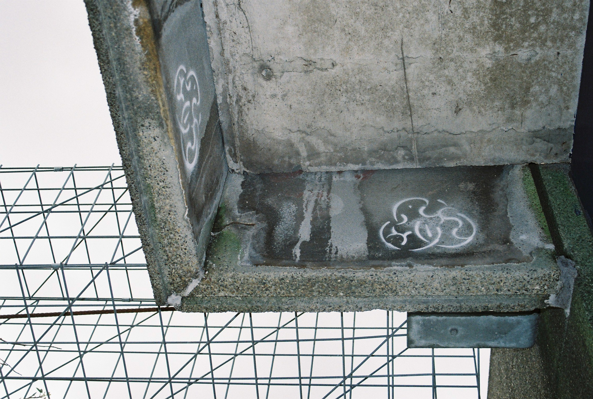
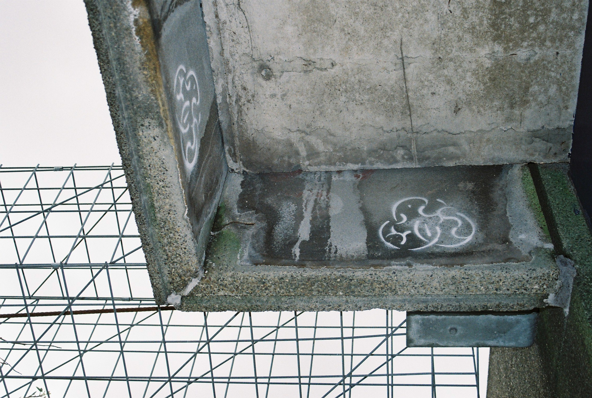

[about]
I am a Rotterdam based media artist working with themes around gaming and the effect of new technologies on the player’s perception of reality. By analysing gameplay methods and implementing them into RL settings, I am creating scenarios in which the viewer turns into the protagonist of an interactive fictional narrative.
[education]
2020 – 2022:
(MA) Experimental Publishing (cum laude), Piet Zwart Institute, Rotterdam
read my master thesis:
asphalt spur, ubiquitous gaming inside the real-time city
2015 – 2019: (BA) Graphic Design x Public & Private (cum laude), Willem de Kooning Academy, Rotterdam
2014 – 2015: Visual Arts & Design, MK24, Amsterdam
2013 – 2014: European History of Art & Philosophy, Ruprecht-Karls University, Heidelberg
[games & exhibitions]
Eixogen (2023), MaMA, Rotterdam; role-play game
Radio, what's new? (2023), Tetem, Enschede; treasure hunt
Agents of Myrra (2023), Tetem, Enschede; treasure hunt
Swamp Surfers (2023), Sickhouse, Enschede; mixed-reality game
868 Mhz (2022), Walkie Talkie, WORM, Rotterdam; film installation
868 Mhz (2022), TEC ART, Rotterdam; geo game
1 Euro Cinema online (2021), Telemagic, Rotterdam; 3d film archive
EARTHRISE × Zhouwei Network (2021), Roodkapje & MaMA, Rotterdam; geo game
FemFest (2021), WORM, Rotterdam; online 3d exhibition design
Zero Emissions by 2099 (2021), MaMA, Rotterdam; online 3d exhibition design
Climb the Firewall (2020), Roodkapje, Rotterdam; experimental escape game & concert
The Overkill Festival (2020), Sickhouse, Enschede; online 3d exhibition design
Climate Knowledges (2020), MaMA, Rotterdam; online 3d exhibition design
Slotparcours ChampdAction.LAbO (2019), deSingel, Antwerp; immersive theatre
I am the Dungeon Master (2019), Gamers of the West, Rotterdam; experimental escape room
Ultimate Dragon
RGB XYZ (2021), Amsterdam
TEC ART Festival (2020), Rotterdam
Media Art Friesland (2019), Leeuwarden
GOGBOT Festival (2019), Enschede
KONVOOI Festival (2019), Bruges
Graduation Show (2019), Willem de Kooning Academy, Rotterdam
[productions]
Modding the Mirror World, MaMA, Rotterdam; exhibition program
Wrong Side Out, Roodkapje, Rotterdam; exhibition & music program
I Don't Know Where We're Going, But, page not found, The Hague; local network city quest
Cybernetic Dreams (2020), Roodkapje, Rotterdam; workshop marathon
There is Something I’ve Been Meaning to Ask You (2020), Roodkapje, Rotterdam; interactive audio tour
Orcs & Oracles (2018), MaMA, Rotterdam; experimental escape room
Digital Masquerade (2018), Manifesting Futures, Waag, Amsterdam; mixed reality screening
Trash Hacking with Edwin Dertien (2018), Waag, Amsterdam; workshop
[residencies]
El Aleph (2022), Porto PT
Habitat (2021), Tredozio IT
Hamburger Community of Live (2020/21), Roodkapje, Rotterdam NL
ChampdAction.LAbO online (2020), deSingel, Antwerp BE
Face to Face: Meet the Neighbours! (2019), S/ash Gallery, Rotterdam NL
Slotparcours ChampdAction.LAbO (2019), deSingel, Antwerp BE

 

 I Am the Dungeon Master is an experimental multi-media escape game inspired by the table-top game Dungeons & Dragons. By making use of interactive chatrooms, players are able to co-write the storyline through the use of the different media in the room. Simulating a digital text-based game, so called Multi-User Dungeon or MUD, which were on the rise in the early ninetees, this interactive installation aims to visualise the basic structure and workings of virtual environments in a playful manner.
I Am the Dungeon Master is an experimental multi-media escape game inspired by the table-top game Dungeons & Dragons. By making use of interactive chatrooms, players are able to co-write the storyline through the use of the different media in the room. Simulating a digital text-based game, so called Multi-User Dungeon or MUD, which were on the rise in the early ninetees, this interactive installation aims to visualise the basic structure and workings of virtual environments in a playful manner.